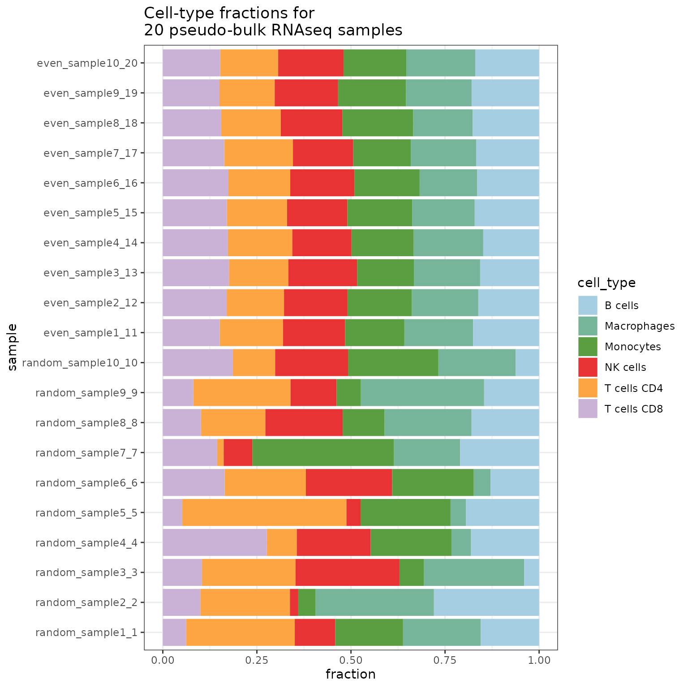
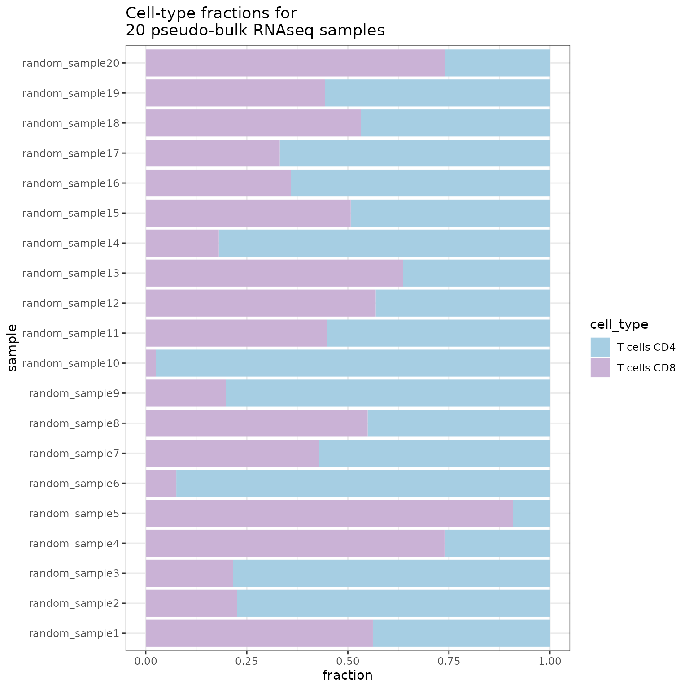

Installation
To install the developmental version of the package, run:
install.packages("devtools")
devtools::install_github("omnideconv/SimBu")To install from Bioconductor:
if (!require("BiocManager", quietly = TRUE)) {
install.packages("BiocManager")
}
BiocManager::install("SimBu")Introduction
As complex tissues are typically composed of various cell types, deconvolution tools have been developed to computationally infer their cellular composition from bulk RNA sequencing (RNA-seq) data. To comprehensively assess deconvolution performance, gold-standard datasets are indispensable. Gold-standard, experimental techniques like flow cytometry or immunohistochemistry are resource-intensive and cannot be systematically applied to the numerous cell types and tissues profiled with high-throughput transcriptomics. The simulation of ‘pseudo-bulk’ data, generated by aggregating single-cell RNA-seq (scRNA-seq) expression profiles in pre-defined proportions, offers a scalable and cost-effective alternative. This makes it feasible to create in silico gold standards that allow fine-grained control of cell-type fractions not conceivable in an experimental setup. However, at present, no simulation software for generating pseudo-bulk RNA-seq data exists.
SimBu was developed to simulate pseudo-bulk samples based on various simulation scenarios, designed to test specific features of deconvolution methods. A unique feature of SimBu is the modelling of cell-type-specific mRNA bias using experimentally-derived or data-driven scaling factors. Here, we show that SimBu can generate realistic pseudo-bulk data, recapitulating the biological and statistical features of real RNA-seq data. Finally, we illustrate the impact of mRNA bias on the evaluation of deconvolution tools and provide recommendations for the selection of suitable methods for estimating mRNA content.
Getting started
This chapter covers all you need to know to quickly simulate some pseudo-bulk samples!
This package can simulate samples from local or public data. This vignette will work with artificially generated data as it serves as an overview for the features implemented in SimBu. For the public data integration using sfaira (Fischer et al. 2020), please refer to the “Public Data Integration” vignette.
We will create some toy data to use for our simulations; two matrices with 300 cells each and 1000 genes/features. One represents raw count data, while the other matrix represents scaled TPM-like data. We will assign these cells to some immune cell types.
counts <- Matrix::Matrix(matrix(rpois(3e5, 5), ncol = 300), sparse = TRUE)
tpm <- Matrix::Matrix(matrix(rpois(3e5, 5), ncol = 300), sparse = TRUE)
tpm <- Matrix::t(1e6 * Matrix::t(tpm) / Matrix::colSums(tpm))
colnames(counts) <- paste0("cell_", rep(1:300))
colnames(tpm) <- paste0("cell_", rep(1:300))
rownames(counts) <- paste0("gene_", rep(1:1000))
rownames(tpm) <- paste0("gene_", rep(1:1000))
annotation <- data.frame(
"ID" = paste0("cell_", rep(1:300)),
"cell_type" = c(
rep("T cells CD4", 50),
rep("T cells CD8", 50),
rep("Macrophages", 100),
rep("NK cells", 10),
rep("B cells", 70),
rep("Monocytes", 20)
)
)Creating a dataset
SimBu uses the SummarizedExperiment class as storage for count data as well as annotation data. Currently it is possible to store two matrices at the same time: raw counts and TPM-like data (this can also be some other scaled count matrix, such as RPKM, but we recommend to use TPMs). These two matrices have to have the same dimensions and have to contain the same genes and cells. Providing the raw count data is mandatory!
SimBu scales the matrix that is added via the tpm_matrix slot by default to 1e6 per cell, if you do not want this, you can switch it off by setting the scale_tpm parameter to FALSE. Additionally, the cell type annotation of the cells has to be given in a dataframe, which has to include the two columns ID and cell_type. If additional columns from this annotation should be transferred to the dataset, simply give the names of them in the additional_cols parameter.
To generate a dataset that can be used in SimBu, you can use the dataset() method; other methods exist as well, which are covered in the “Inputs & Outputs” vignette.
ds <- SimBu::dataset(
annotation = annotation,
count_matrix = counts,
tpm_matrix = tpm,
name = "test_dataset"
)
#> Filtering genes...
#> Created dataset.SimBu offers basic filtering options for your dataset, which you can apply during dataset generation:
filter_genes: if TRUE, genes which have expression values of 0 in all cells will be removed.
variance_cutoff: remove all genes with a expression variance below the chosen cutoff.
type_abundance_cutoff: remove all cells, which belong to a cell type that appears less the the given amount.
Simulate pseudo bulk datasets
We are now ready to simulate the first pseudo bulk samples with the created dataset:
simulation <- SimBu::simulate_bulk(
data = ds,
scenario = "random",
scaling_factor = "NONE",
ncells = 100,
nsamples = 10,
BPPARAM = BiocParallel::MulticoreParam(workers = 4), # this will use 4 threads to run the simulation
run_parallel = TRUE
) # multi-threading to TRUE
#> Using parallel generation of simulations.
#> Finished simulation.ncells sets the number of cells in each sample, while nsamples sets the total amount of simulated samples.
If you want to simulate a specific sequencing depth in your simulations, you can use the total_read_counts parameter to do so. Note that this parameter is only applied on the counts matrix (if supplied), as TPMs will be scaled to 1e6 by default.
SimBu can add mRNA bias by using different scaling factors to the simulations using the scaling_factor parameter. A detailed explanation can be found in the “Scaling factor” vignette.
Currently there are 6 scenarios implemented in the package:
even: this creates samples, where all existing cell-types in the dataset appear in the same proportions. So using a dataset with 3 cell-types, this will simulate samples, where all cell-type fractions are 1/3. In order to still have a slight variation between cell type fractions, you can increase the
balance_uniform_mirror_scenarioparameter (default to 0.01). Setting it to 0 will generate simulations with exactly the same cell type fractions.random: this scenario will create random cell type fractions using all present types for each sample. The random sampling is based on the uniform distribution.
mirror_db: this scenario will mirror the exact fractions of cell types which are present in the provided dataset. If it consists of 20% T cells, 30% B cells and 50% NK cells, all simulated samples will mirror these fractions. Similar to the uniform scenario, you can add a small variation to these fractions with the
balance_uniform_mirror_scenarioparameter.weighted: here you need to set two additional parameters for the
simulate_bulk()function:weighted_cell_typesets the cell-type you want to be over-representing andweighted_amountsets the fraction of this cell-type. You could for example useB-celland0.5to create samples, where 50% are B-cells and the rest is filled randomly with other cell-types.pure: this creates simulations of only one single cell-type. You have to provide the name of this cell-type with the
pure_cell_typeparameter.custom: here you are able to create your own set of cell-type fractions. When using this scenario, you additionally need to provide a dataframe in the
custom_scenario_dataparameter, where each row represents one sample (therefore the number of rows need to match thensamplesparameter). Each column has to represent one cell-type, which also occurs in the dataset and describes the fraction of this cell-type in a sample. The fractions per sample need to sum up to 1. An example can be seen here:
pure_scenario_dataframe <- data.frame(
"B cells" = c(0.2, 0.1, 0.5, 0.3),
"T cells" = c(0.3, 0.8, 0.2, 0.5),
"NK cells" = c(0.5, 0.1, 0.3, 0.2),
row.names = c("sample1", "sample2", "sample3", "sample4")
)
pure_scenario_dataframe
#> B.cells T.cells NK.cells
#> sample1 0.2 0.3 0.5
#> sample2 0.1 0.8 0.1
#> sample3 0.5 0.2 0.3
#> sample4 0.3 0.5 0.2Results
The simulation object contains three named entries:
-
bulk: a SummarizedExperiment object with the pseudo-bulk dataset(s) stored in theassays. They can be accessed like this:
dim(SummarizedExperiment::assays(simulation$bulk)[["bulk_counts"]])
#> [1] 1000 10
dim(SummarizedExperiment::assays(simulation$bulk)[["bulk_tpm"]])
#> [1] 1000 10If only a single matrix was given to the dataset initially, only one assay is filled.
cell_fractions: a table where rows represent the simulated samples and columns represent the different simulated cell-types. The entries in the table store the specific cell-type fraction per sample.scaling_vector: a named list, with the used scaling value for each cell from the single cell dataset.
It is also possible to merge simulations:
simulation2 <- SimBu::simulate_bulk(
data = ds,
scenario = "even",
scaling_factor = "NONE",
ncells = 1000,
nsamples = 10,
BPPARAM = BiocParallel::MulticoreParam(workers = 4),
run_parallel = TRUE
)
#> Using parallel generation of simulations.
#> Finished simulation.
merged_simulations <- SimBu::merge_simulations(list(simulation, simulation2))Finally here is a barplot of the resulting simulation:
SimBu::plot_simulation(simulation = merged_simulations)
More features
Simulate using a whitelist (and blacklist) of cell-types
Sometimes, you are only interested in specific cell-types (for example T cells), but the dataset you are using has too many other cell-types; you can handle this issue during simulation using the whitelist parameter:
simulation <- SimBu::simulate_bulk(
data = ds,
scenario = "random",
scaling_factor = "NONE",
ncells = 1000,
nsamples = 20,
BPPARAM = BiocParallel::MulticoreParam(workers = 4),
run_parallel = TRUE,
whitelist = c("T cells CD4", "T cells CD8")
)
#> Using parallel generation of simulations.
#> Finished simulation.
SimBu::plot_simulation(simulation = simulation)
In the same way, you can also provide a blacklist parameter, where you name the cell-types you don’t want to be included in your simulation.
sessionInfo()
#> R version 4.2.1 (2022-06-23)
#> Platform: x86_64-pc-linux-gnu (64-bit)
#> Running under: Ubuntu 20.04.5 LTS
#>
#> Matrix products: default
#> BLAS: /usr/lib/x86_64-linux-gnu/blas/libblas.so.3.9.0
#> LAPACK: /usr/lib/x86_64-linux-gnu/lapack/liblapack.so.3.9.0
#>
#> locale:
#> [1] LC_CTYPE=C.UTF-8 LC_NUMERIC=C LC_TIME=C.UTF-8
#> [4] LC_COLLATE=C.UTF-8 LC_MONETARY=C.UTF-8 LC_MESSAGES=C.UTF-8
#> [7] LC_PAPER=C.UTF-8 LC_NAME=C LC_ADDRESS=C
#> [10] LC_TELEPHONE=C LC_MEASUREMENT=C.UTF-8 LC_IDENTIFICATION=C
#>
#> attached base packages:
#> [1] stats graphics grDevices utils datasets methods base
#>
#> other attached packages:
#> [1] SimBu_0.99.15
#>
#> loaded via a namespace (and not attached):
#> [1] MatrixGenerics_1.8.1 Biobase_2.56.0
#> [3] sass_0.4.2 tidyr_1.2.1
#> [5] jsonlite_1.8.2 bslib_0.4.0
#> [7] RcppParallel_5.1.5 highr_0.9
#> [9] stats4_4.2.1 GenomeInfoDbData_1.2.8
#> [11] yaml_2.3.6 pillar_1.8.1
#> [13] lattice_0.20-45 glue_1.6.2
#> [15] digest_0.6.30 GenomicRanges_1.48.0
#> [17] RColorBrewer_1.1-3 XVector_0.36.0
#> [19] colorspace_2.0-3 htmltools_0.5.3
#> [21] Matrix_1.5-1 pkgconfig_2.0.3
#> [23] zlibbioc_1.42.0 purrr_0.3.5
#> [25] scales_1.2.1 BiocParallel_1.30.4
#> [27] tibble_3.1.8 generics_0.1.3
#> [29] farver_2.1.1 IRanges_2.30.1
#> [31] ggplot2_3.3.6 ellipsis_0.3.2
#> [33] cachem_1.0.6 withr_2.5.0
#> [35] SummarizedExperiment_1.26.1 BiocGenerics_0.42.0
#> [37] cli_3.4.1 magrittr_2.0.3
#> [39] memoise_2.0.1 evaluate_0.17
#> [41] fs_1.5.2 fansi_1.0.3
#> [43] textshaping_0.3.6 tools_4.2.1
#> [45] data.table_1.14.4 lifecycle_1.0.3
#> [47] matrixStats_0.62.0 stringr_1.4.1
#> [49] S4Vectors_0.34.0 munsell_0.5.0
#> [51] DelayedArray_0.22.0 compiler_4.2.1
#> [53] pkgdown_2.0.6 jquerylib_0.1.4
#> [55] GenomeInfoDb_1.32.4 proxyC_0.3.3
#> [57] systemfonts_1.0.4 rlang_1.0.6
#> [59] grid_4.2.1 RCurl_1.98-1.9
#> [61] bitops_1.0-7 labeling_0.4.2
#> [63] rmarkdown_2.17 gtable_0.3.1
#> [65] codetools_0.2-18 R6_2.5.1
#> [67] knitr_1.40 dplyr_1.0.10
#> [69] fastmap_1.1.0 utf8_1.2.2
#> [71] rprojroot_2.0.3 ragg_1.2.3
#> [73] desc_1.4.2 stringi_1.7.8
#> [75] parallel_4.2.1 Rcpp_1.0.9
#> [77] vctrs_0.4.2 tidyselect_1.2.0
#> [79] xfun_0.34 sparseMatrixStats_1.8.0